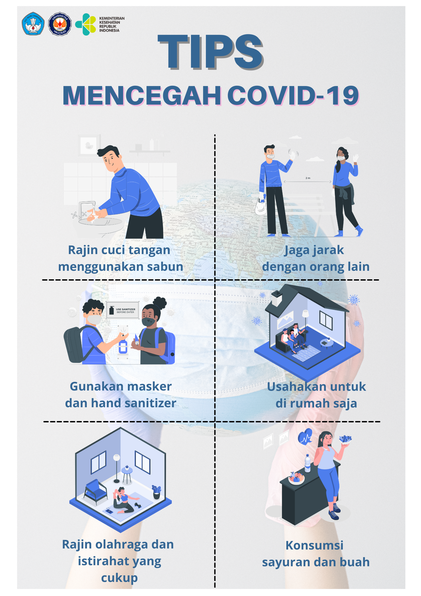

COVID-19 adalah penyakit menular yang disebabkan oleh jenis virus corona yang baru ditemukan. Virus ini adalah virus baru dan penyakit yang tidak dikenal sebelum terjadinya wabah di Wuhan, Cina, pada bulan Desember 2019. Sejak pandemi COVID-19 muncul, hampir semua orang mengalami kendala untuk menjalani kehidupan normal akibat pembatasan yang perlu dilakukan untuk mencegah penularan virus Corona.
Namun, dengan usainya pembatasan tersebut, pemerintah menganjurkan kita untuk mulai melakukan kegiatan seperti biasa, tentunya sambil mematuhi protokol pencegahan COVID-19. Hal ini mendorong kita untuk lebih gencar dalam menerapkan langkah pencegahan dasar COVID-19. Beberapa tips dalam mencegah penularan Covid-19 dapat dilihat pada gambar di bawah ini: 
1. Rajin mencuci tangan menggunakan sabun Cucilah tangan dengan air mengalir dan sabun, setidaknya selama 20 detik. Pastikan seluruh bagian tangan tercuci hingga bersih, termasuk punggung tangan, pergelangan tangan, sela-sela jari, dan kuku. Setelah itu, keringkan tangan menggunakan tisu atau handuk bersih.
2. Gunakan masker dan hand sanitizer ketika berpergian Meski tidak sepenuhnya efektif mencegah paparan kuman, namun penggunaan masker ini tetap bisa menurunkan risiko penyebaran penyakit infeksi, termasuk infeksi virus Corona.
3. Rajin olahraga dan istirahat yang cukup Tetap berolahraga. Kamu bisa berolahraga aerobik di rumah. Manfaatnya bagus untuk menjaga kesehatan dan meningkatkan daya tahan tubuh sehingga tak gampang terserang virus berbahaya.
4. Jaga jarak dengan orang lain Pembatasan fisik juga dilakukan dengan cara menjaga jarak minimal 1 meter dengan orang lain terutama saat beraktivitas di tempat umum atau keramaian.
5. Usahakan untuk di rumah saja Isolasi mandiri dianjurkan untuk dilakukan oleh orang yang berisiko tinggi terinfeksi virus Corona, seperti lansia atau orang yang memiliki penyakit penyerta, misalnya hipertensi, diabetes, atau daya tahan tubuh yang lemah.
6. Konsumsi makanan bergizi Pastikan konsumsi makanan sehat. Hindari mengkonsumsi makanan yang masih mentah. Beberapa jenis makanan yang bagus untuk meningkatkan sistem kekebalan tubuh seperti seperti sayuran dan buah.
Jika demam, batuk, atau kesulitan bernapas, segera cari bantuan medis. Telepon terlebih dahulu agar penyedia layanan kesehatan dapat segera mengarahkan Anda ke fasilitas kesehatan yang tepat. Tindakan ini akan melindungi Anda serta mencegah penyebaran virus dan infeksi lainnya.